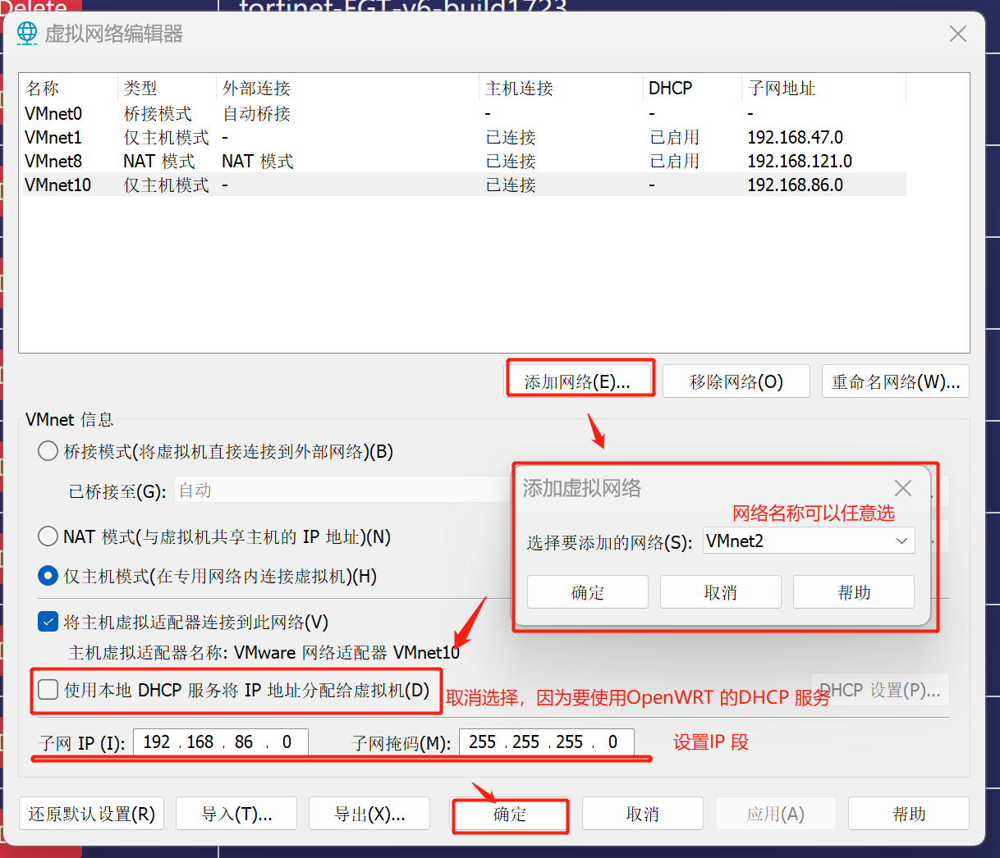
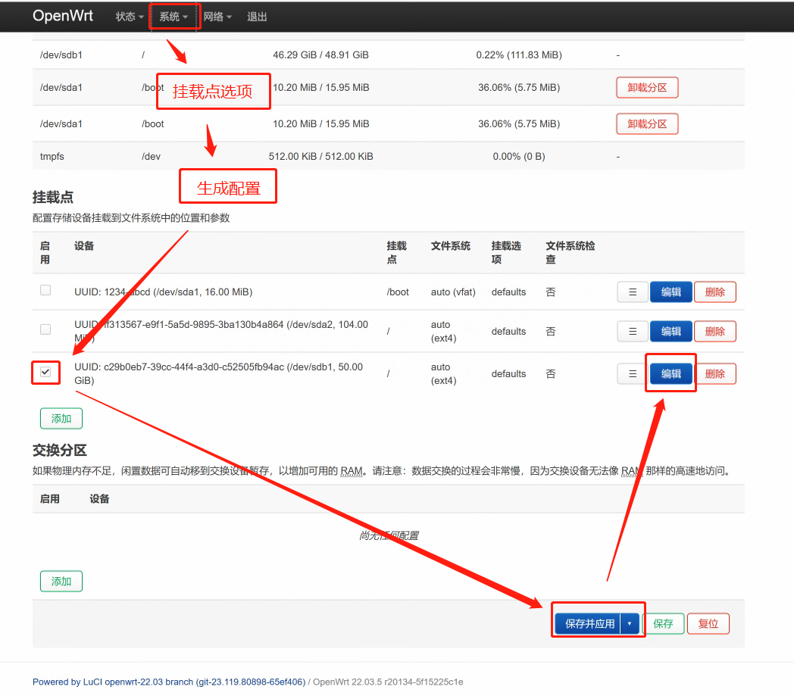
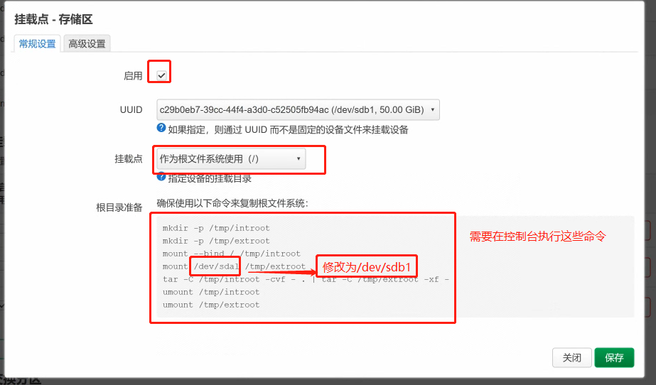
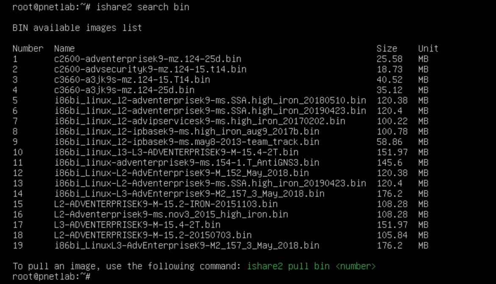

VM 中配置OpenWRT 透明路由
写这篇笔记的起因是在家里的电脑上安装
Pnetlab时，因为GFW 的原因，导致ishare2 无法下载镜像。通过各种PROXY也不能解决问题，只好尝试配置OpenWRT路由并结合V2rayA透明代理来解决。发现能行，所以记录一下实现的过程。将以有为也~
思路
首先，新建一个OpenWRT 虚拟机，有两个网卡：其中一个桥接到宿主网络，表示WAN 口；另外一个接到自己创建的虚拟局域网，表示LAN 口。然后在此虚拟机中安装V2rayA 服务，配置为透明代理模式。如果能成功启动代理，那么所有接到LAN 口的客户端就都能科学上网，而不需做任何设置。
准备OpenWRT 镜像
可以从官网下载，要求是版本号/target/x86/64/generic-ext4-combined-efi.img.gz 即可，如https://downloads.openwrt.org/releases/22.03.5/targets/x86/64/openwrt-22.03.5-x86-64-generic-ext4-combined-efi.img.gz。
下载完成后需要将.gz 文件解压，并且将里面的.img 文件转换成VMware 可以使用的格式。官方推荐的工具是qemu-img：
# 要求机器上安装有qemu
qemu-img convert -f raw -O vmdk {your.img} {fw.vmdk} # fw = firmware 但是也可以参照知乎上的教程 使用StarWind V2V Converter。最终会得到一个虚拟磁盘文件，这里面就是OpenWRT 的固件系统了，放在虚拟机里面可以直接启动的。
VMware 配置
首先，在编辑-虚拟网络编辑器-更改设置(C)，添加一个局域网络。这里用的是(VMnet10)192.168.86.0/24，宿主机会自动获得一个IP 地址192.168.86.1：

然后，创建OpenWRT 虚拟机，其配置如下：
- 客户端操作系统选择
Linux --> 其他 Linux 5.x 内核 64 位 - 最大磁盘大小
8GB/储存为单个文件。这个磁盘是用来扩展OpenWRT固件空间的，所以需要修改虚拟设备节点不能在SCSI 0.0
完成创建虚拟机后，还需要编辑虚拟机设置，添加fw.vmdk 以及修改网卡配置，参考Vmware搭建软路由教程(Openwrt)：
- 添加现有的
SCSI虚拟硬盘fw.vmdk到虚拟设备节点SCSI 0.0（硬盘设置–高级） - 添加
网络适配器2设置为桥接模式（WAN口） - 设置
网络适配器为特定虚拟网络（自定义–VMnet10，LAN口） - 网络适配器的顺序不能反了
完成之后启动系统便可以进入OpenWRT，默认不需要密码直接进入root 账户。但是此时还不能通过网页管理，需要在命令行中进行配置。
OpenWRT 配置
首先，WAN 口是桥接，可以保持默认自动获取IP，然后修改LAN 口地址并重启：
root@OpenWrt:~# vi /etc/config/network
# config interface 'lan'
# option device 'br-lan'
# option proto 'static'
# option ipaddr '192.168.86.254' # 修改这里就好了
# option netmask '255.255.255.0'
# option ip6assign '60'
root@OpenWrt:~# reboot 重启之后我们便能在宿主机中访问http://192.168.86.254 管理路由器了。
之后需要将镜像源切换到国内，一边安装软件：
root@OpenWrt:~# opkg update
root@OpenWrt:~# opkg install ca-certificates luci-ssl-openssl # 可能会提示失败，忽略就行
root@OpenWrt:~# sed -i 's_downloads.openwrt.org_mirrors.cloud.tencent.com/lede_' /etc/opkg/distfeeds.conf # 替换为腾讯源
root@OpenWrt:~# sed -i 's_downloads.openwrt.org_mirrors.ustc.edu.cn/lede_' /etc/opkg/distfeeds.conf # 替换为中科大源
root@OpenWrt:~# reboot 硬盘扩容
OpenWRT 官方的固件只有120M 的空间，安装几个软件就满了，所以需要将我们之前创建的空白的硬盘挂载到系统中，这里参考OpenWrt 存储空间扩容的两种方案中的方案儿。
首先安装磁盘分区工具：
root@OpenWrt:~# opkg update
root@OpenWrt:~# opkg install cfdisk fdisk e2fsprogs block-mount然后格式化空白的硬盘：
root@OpenWrt:~# fdisk -l # 会显示一个sdb 未被使用的硬盘
root@OpenWrt:~# fdisk /dev/sdb # 进入fsdisk 命令
> ...
> Command (m for help): n （输入 n 创建分区）
> ...
> Select (default p): p （输入 p 创建主分区）
> Partition number (1-4, default 1): （回车键，默认创建一个分区）
> First sector (2048-20971519, default 2048): （回车键）
> Last sector, +/-sectors or +/-size{K,M,G,T,P} (2048-20971519, default 20971519): (回车键)
> ...
> Command (m for help): w （输入 w 写入分区表）
root@OpenWrt:~# fdisk -l # 会显示一个/dev/sdb1 的盘符
root@OpenWrt:~# mkfs.ext4 /dev/sdb1 # 格式化/dev/sdb1 为ext4 

命令如下：
root@OpenWrt:~# mkdir -p /tmp/introot
root@OpenWrt:~# mkdir -p /tmp/extroot
root@OpenWrt:~# mount --bind / /tmp/introot
root@OpenWrt:~# mount /dev/sdb1 /tmp/extroot # 修改后
root@OpenWrt:~# tar -C /tmp/introot -cvf - . | tar -C /tmp/extroot -xf -
root@OpenWrt:~# umount /tmp/introot
root@OpenWrt:~# umount /tmp/extroot
root@OpenWrt:~# reboot 配置V2rayA
OpenWrt 21.02+ 可以直接通过opkg 安装v2raya。
root@OpenWrt:~# opkg update
root@OpenWrt:~# opkg install v2raya v2ray-geoip v2raya-geosit
# 如果在启动代理时提示iptables 的问题，可以依次尝试安装以下包
root@OpenWrt:~# opkg install ca-bundle ip-full kmod-nft-tproxy
# 如果还不行的话
root@OpenWrt:~# opkg install iptables-mod-conntrack-extra iptables-mod-extra iptables-mod-filter iptables-mod-tproxy kmod-ipt-nat6
# 如果不想以服务的形式运行可以直接从命令行启动
root@OpenWrt:~# v2raya # 或者 v2raya& 保持在后台云运行
# 下载配置文件和服务文件
root@OpenWrt:~# wget https://raw.githubusercontent.com/openwrt/packages/master/net/v2raya/files/v2raya.config -O /etc/config/v2raya
root@OpenWrt:~# wget https://raw.githubusercontent.com/openwrt/packages/master/net/v2raya/files/v2raya.init -O /etc/init.d/v2raya
root@OpenWrt:~# chmod +x /etc/init.d/v2raya
# 安装并启动服务
root@OpenWrt:~# uci set v2raya.config.enabled='1'
root@OpenWrt:~# uci commit v2raya
root@OpenWrt:~# /etc/init.d/v2raya enable
root@OpenWrt:~# /etc/init.d/v2raya start
# 安装完成后就可以通过http://192.168.86.254:2017 访问到v2raya 服务了配置透明代理
可以导入自己购买的小飞机的链接，然后参考2023最简路由器-透明代理-个人实现：OpenWRT + v2Ray + v2RayA的教程，只需要在v2raya 的设置中修改如下选项：
当所有的这一切配置好之后，将客户端虚拟机的网卡接入到VMnet10 之后便能自动获取到IP 地址，并且不需要做任何配置就能上网了。
效果如下，需要注意的是，ping 命令似乎依然不好使~~~
